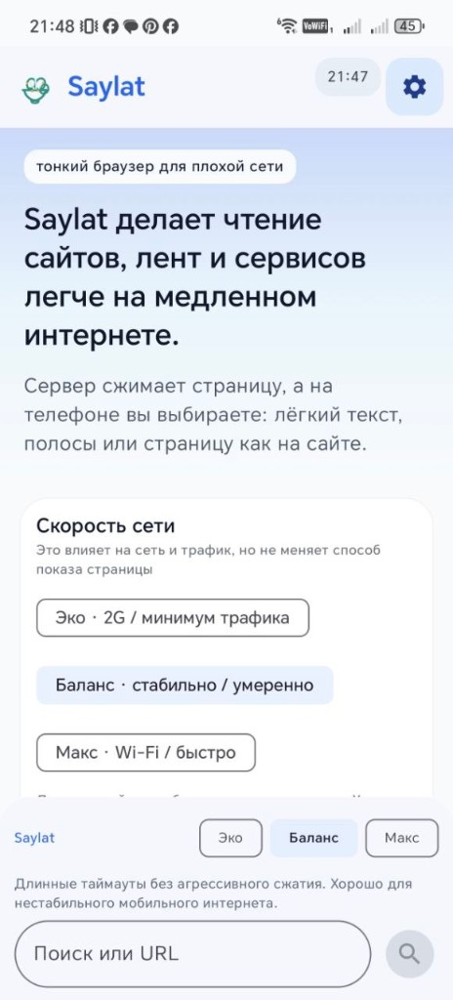

Экономия трафика
Режимы Light / Medium / Full сокращают полезную нагрузку до приемлемого уровня для слабых каналов.
Сайт обрабатывается на вашем сервере, а телефон получает сжатую и удобную версию страницы.

Режимы Light / Medium / Full сокращают полезную нагрузку до приемлемого уровня для слабых каналов.
Данные не уходят в общий облачный сервис. Вы контролируете свой VPS и доступ к нему.
Нативный Android UI, офлайн-кэш, быстрые ссылки и режим STRIPS для сложных сайтов.

Поднимите сервер одной командой:
curl -fsSL https://raw.githubusercontent.com/Baddysays/Saylat/main/scripts/install-saylat-server.sh | bash
Дальше установите APK и укажите сервер `http://ВАШ_IP:8787`.